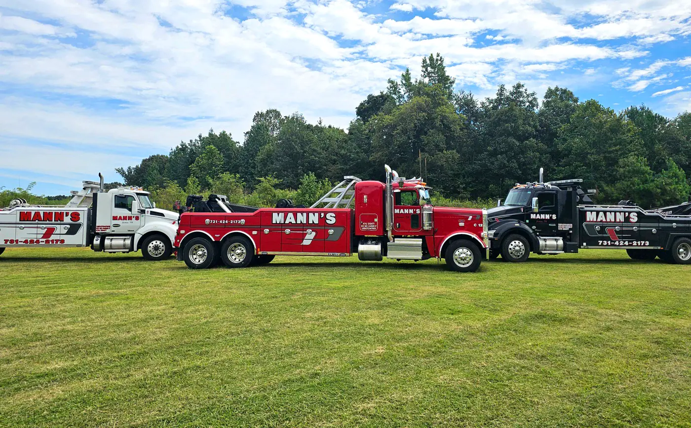
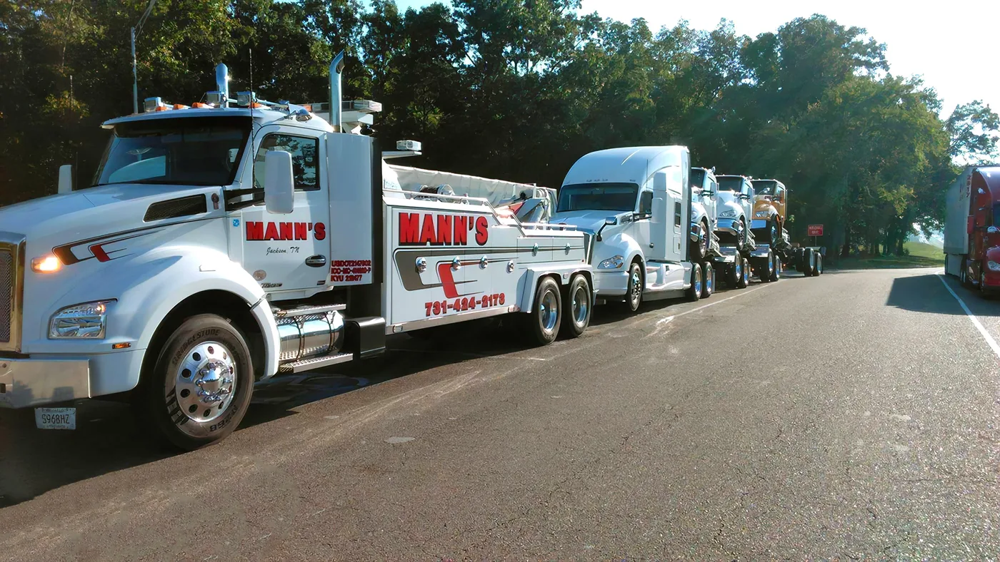
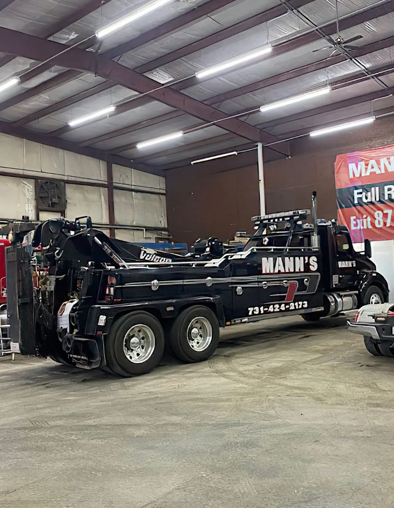
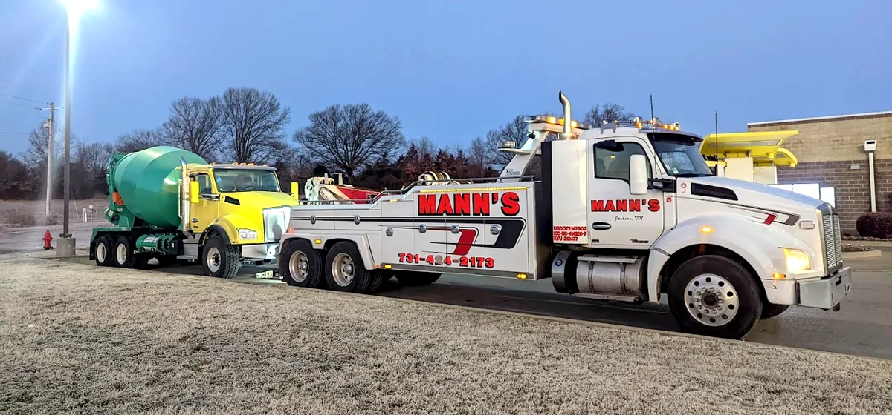
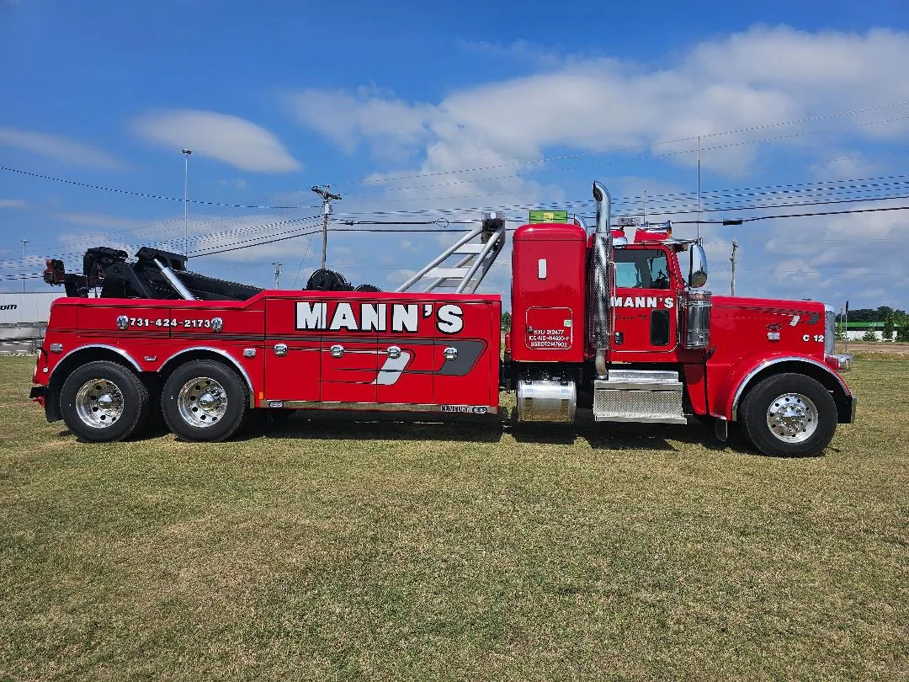

Broke down, wrecked or stuck? Call first.
Tap to call Mann’s(731) 424-2173Open 24 hoursCan’t talk where you are? Send your location and what happened and they call you back.
Anyone hurt? Call 911 first.
Heavy-duty towing and wrecker service Jackson & Lexington, TN
“Don’t stress when you have an accident, call Mann’s Wrecker Service… we will take care of everything!”

What happened?
Pick one and the request form opens with it already selected. Add where you are and what you’re driving, and the dispatcher knows which truck to send.
Broke down
Won’t start, overheated, quit on the road.
Accident
Tow to a secure lot, then they handle the insurance side.
Stuck or off the road
Mud, a ditch, turned over. Winch outs.
Semi or heavy truck
Tractor-trailers, box trucks, equipment, RVs.
Flat tire
“We change all types of tires…anywhere!”
Locked out
Keys in the car, opened without damage.
All services, including fuel delivery, transloading, tow aways and scrap pickup.
If you’re in an accident
Mann’s hopes you never have one. If it happens, here is what they do, in the order they describe it on their own site.
- Call, or have the officer call Mann’sTell the authorities on scene you want Mann’s Wrecker Service.
- Tow to a secure lotMann’s tows your vehicle to a secure lot.
- They work with your insuranceMann’s meets with the adjuster to decide if it’s totaled or repairable.
- Delivered to your shopThen they take it to the repair shop you choose, and answer your questions along the way.
Built for the big ones
“If you have a commercial truck be it a semi-truck or even multiple trucks, we have industrial wreckers that can tow anything.” Their own words, and their own trucks.



Stranded on I-40? You’re not the first.
Travelers broken down outside Jackson, in their own words.
“Stranded on the highway and they were absolutely fantastic! Would recommend to anyone. I called them directly on a Sunday and someone that works there actually picked up the phone and answered professionally. No “press 1 for” stuff. Driver was also very nice and extremely helpful.”
“Andy with Mann’s rescued me after I waited 3 hours on I-40 for another tow service. Incredibly polite, great service and quick on the scene. I hope I don’t need them again but if I ever need a tow service in Jackson, TN, Mann’s is my first call.”
“Was headed to Nashville for work and hit something on I-40 just outside of Jackson, causing two flat tires on my left side. I immediately called Mann's, and they sent Andy to help me out. He was professional and quick. Highly recommended.”
“My family and I were heading West bound toward Memphis. We started smelling burning rubber and pulled over. We had a flat on the expressway. We called Mann's Wrecker and David was dispatched to help us. He was fast , friendly and knowledgeable. He got us on the road in no time! …”
“My Dodge Viper broke down on I-40 near Jackson and I was worried about how to get it loaded without damaging the front end. But, David showed up with some extra 2x4s and tire straps. He looked everything over and discissed his plan. …”
“My daughter's car blew its engine on New Years morning on her way to work and it was 15 degrees out there, I called Mann and they were there in minutes. The bill was half of what I was expecting.”
Where they work
Mann’s serves Jackson and Madison County, Tennessee, with locations in Jackson and Lexington.
- Jackson2100 Hwy 70 E, Jackson, TN 38305
- Lexington area21305 State Route 22 N, Wildersville, TN 38388
